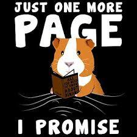

Shy Guinea Pig Blind Books Documentation
How Blind Books Work
Blind books are wrapped books where customers choose a surprise story based only on clues provided on the package. To get the full expeience, follow these steps:
- Pick a Genre
- Read the Clues
- Take Home Your Surprise
- Open it When You're Ready
Contact/Visit
OUR HOURS
Monday - Friday: 10:00 am - 6:00 pm
Saturday: 10:00 am - 4:00 pm
LOCATION
1234 Pinebrook Way, Charlotte, NC
FAQ
What is a blind book?
A blind book is a wrapped book chosen for you based on the few details we know. The title and cover are to remain a surprise until you unwrap it!
How do you a choose the books?
Each book is thoughtfully selected based on the survey you have filled out. We choose stories similar to the ones you have expressed liking, while slightly venturing into newer territories to see what you may like!
Can I choose a genre or theme?
Yes! In the survey, you choose a genre and give us some details. We'll use your preferences to select a book that would match your reading style while keeping it a surprise.
Will I recieve a book I've already read?
We do our best to avoid duplicates by considering your preferences and any information you have provided. If you recieved a duplicate, please contact us and we will be happy to help!
Are the books new or used?
We do our best to provide you with new books that are carefully packaged. However, for a cheaper price, we can offer books that have been donated
Can I send a blind book as a gift?
Absolutely! Blind books can be a very thoughtful gift, and we can include any personalized notes to make it even more special.
Can I return or exchange a book?
In limited circumstances, yes! Please contact us and we will let you know if your situation would allow it!
The Guinea Pig Guarantee

Every book is carefully selected to provide readers with a fun and unexpected experience.